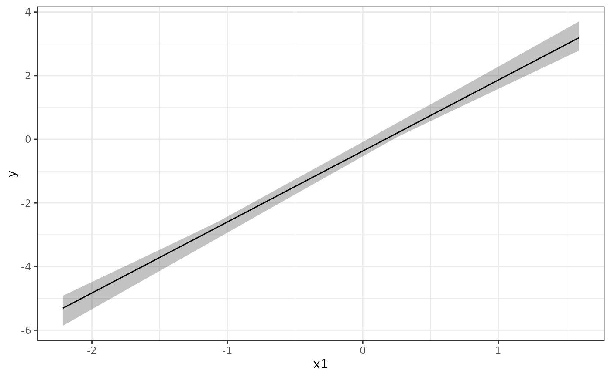

Wraps lb_grid() (with at = "median" by default) and
predict.lb_boot() to produce a ribbon plot of .fitted +/- interval
vs. the focal predictor. Non-focal predictors are held at their median.
Arguments
- x
An
lb_bootobject.- focal
Name of the focal predictor (string). Must be a column in the original data.
- by
A
vars()expression for faceting (e.g.vars(clay)), orNULL. DefaultNULL.- raw_data
A data frame to overlay as points, or
NULL. DefaultNULL. Must contain bothfocaland the response variable.- ...
Passed to
lb_grid().
Details
Users wanting per-combination ribbons (e.g. one ribbon per observed mixture)
should call lb_grid() directly with at = "observed" and build the
ggplot manually.
Examples
# \donttest{
set.seed(1)
n <- 40
df <- data.frame(x1 = rnorm(n), x2 = rnorm(n), x3 = rnorm(n))
df$y <- 2 * df$x1 + rnorm(n)
spec <- suppressMessages(lb_spec(y ~ x1 + x2 + x3, data = df))
boot <- lb_bootstrap(spec, B = 5)
lb_plot_prediction(boot, focal = "x1")

# }